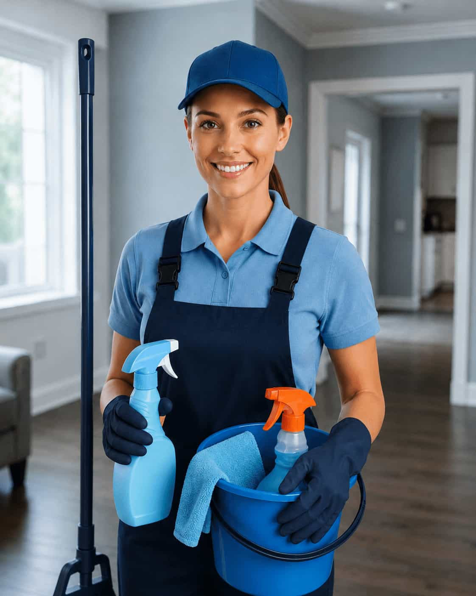
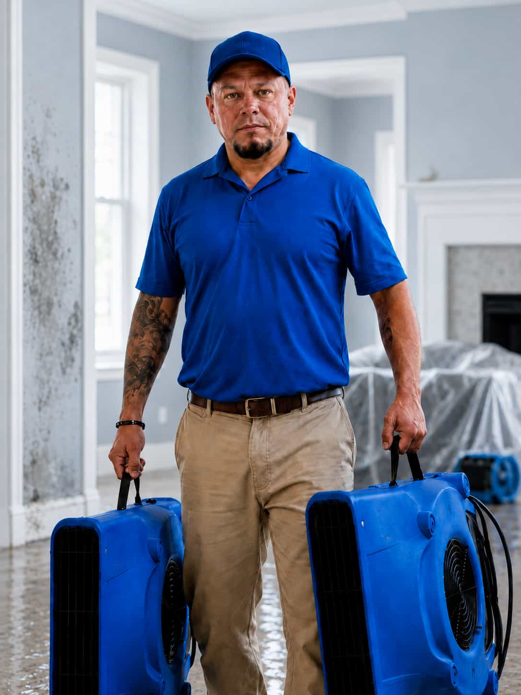

Clarity
Start with what is happening now.
Aqualume helps you put the situation into a clearer context before you begin exploring next-step options.
ABOUT AQUALUME
Aqualume was built to help homeowners move from uncertainty toward clearer service paths and local provider options.

WHY AQUALUME EXISTS
Aqualume was designed around a simple idea: homeowners deserve a clearer way to navigate water damage situations.

Less searching. More clarity. Your decision always.
A DIFFERENT STARTING POINT
Searching alone can feel like:
Aqualume is designed to help you:
One request can make the process feel easier to navigate.
HOMEOWNER-FIRST PRINCIPLES
Aqualume is designed to make a difficult moment feel more organized without taking choice away from the homeowner.
Aqualume helps you put the situation into a clearer context before you begin exploring next-step options.
You can review relevant local provider options and decide which path feels right for your home and timeline.
Clear information and a more organized request flow can make difficult water damage decisions feel less overwhelming.

WHAT AQUALUME HELPS YOU DO
Start with the situation in front of you, then explore support directions and local provider options at your own pace.
HOMEOWNER FEEDBACK
People often come to Aqualume during urgent or uncertain situations. These development placeholders should be replaced with verified, authorized customer feedback before launch.
Aqualume is built to help homeowners explore options, not push one provider or one outcome.
You decide who to contact, what to compare, and what next step feels right.
The platform is designed to turn an uncertain water damage moment into a more structured request path.
READY FOR A CLEARER NEXT STEP?
Tell us what is happening in your home and begin exploring relevant local provider options through one clear request.
Independent platform. Local options. Homeowner choice.